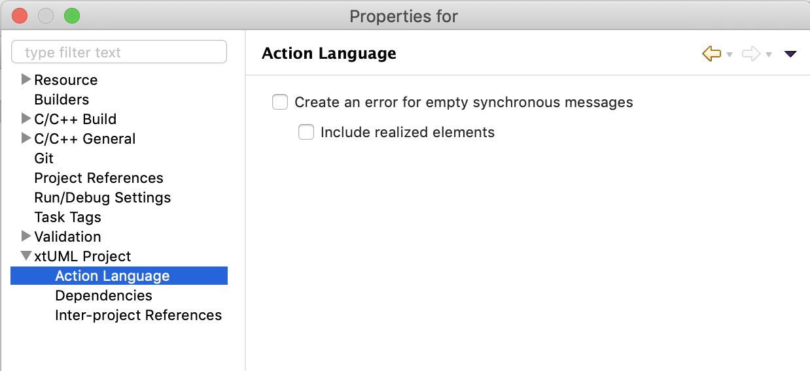

The settings here override the value of the same workspace-level settings for
this project.
This preference will enable parse errors when a return value is required. The parse
errors will be created for the following elements when they have no action language:
The sub-setting controls whether or not parse errors are raised for realized elements
without return values.
